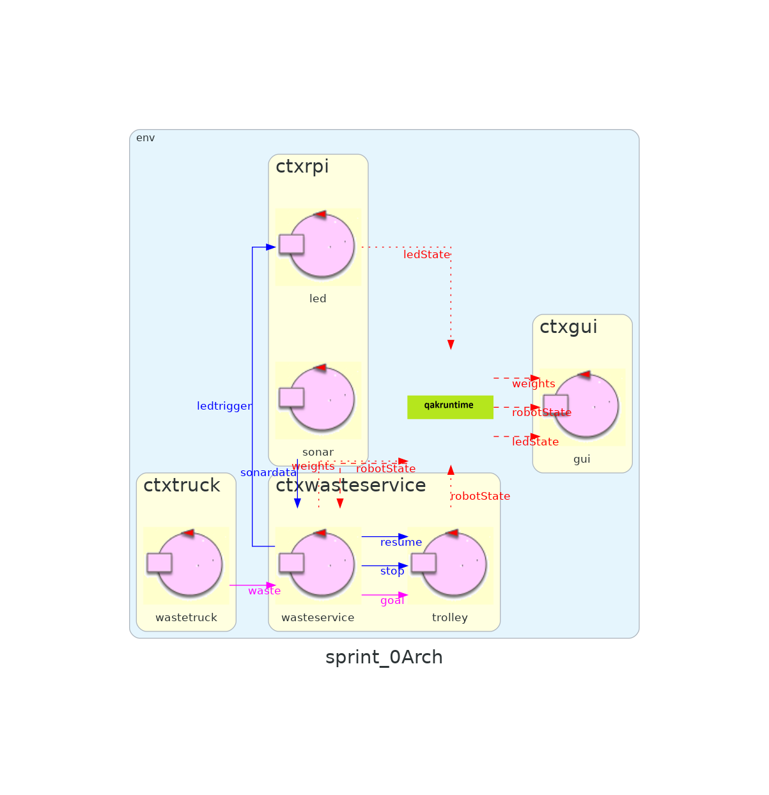

Introduction
Tema finale corso di studio Ingegneria dei sistemi software, Laurea Magistrale Università di Bologna
Requirements
Requisiti committenteRequirement analysis
Una prima analisi dei requisiti è data dalla formalizzazione di tali in un modello meno ambiguo rispetto al testo scritto : una immagine che cerca di raffigurare le entità in gioco, i contesti in cui ognuno di essi vive e la presenza delle interazioni tra una entità ed un'altra.
In questa prima fase trascuro il significato semantico delle singole interazioni (dispaccio, evento, richiesta-risposta), mi concentro sulle entità i quali partecipano alla singola interazione.
Di seguito separo logicamente i requisiti in 3 macro aree, ognuna delle quali una volta raggiunto, porta ad un prototipo con una funzionalità assestante
descrizione del dominio
A company intends to build a WasteService for the separate collection of waste, composed of a set of elements:
a service area (rectangular, flat) that includes:
an INDOOR port, to enter waste material
a PlasticBox container, devoted to store objects made of plastic, upto MAXPB kg of material.
a GlassBox container, devoted to store objects made of glass, upto MAXGB kg of material.
The service area is free from internal obstacles, as shown in the following picture:

a DDR robot working as a transport trolley, that is intially situated in its HOME location. The transport trolley has the form of a square of side length RD.
core-functionality
The transport trolley is used to performa a deposit action that consists in the following phases:
pick up a waste-load from a Waste truck located on the INDOOR
go from the INDOOR to the proper waste container
deposit the waste-load in the container
The Waste truck driver approaches the INDOOR and sends (using a smart device) a request to store the load, by specifyng the type of the material (plastic or glass) and its TruckLoad.
The WasteService sends the answer loadaccept if the final content of proper container will not surpass the maximum value allowed (MAXPB or MAXGB). Otherwise, it sends the answer loadrejecetd and the Waste truck leaves the INDOOR area.
When the load is accepted, the transport trolley reaches the INDOOR, picks up the material, goes to the proper container and settles the material.
During this activity, the WasteService blinks the LedWhen the deposit action is terminated, the transport trolley excutes another deposit command (if any) or returns to its HOME.
a Sonar and a Led connected to a RaspnerryPi. The Led is used as a warning devices, according to the following scheme:
the Led is off when the transport trolley is at HOME
the Led blinks while the transport trolley is moving
the Led is on when transport trolley is stopped.
The Sonar is used as an ‘alarm device’: when it measures a distance less that a prefixed value DLIMT, the transport trolley must be stopped. It will be resumed when Sonar detects again a distance higher than DLIMT.
When the load is accepted, the transport trolley reaches the INDOOR, picks up the material, goes to the proper container and settles the material. During this activity, the WasteService blinks the Led
a Service-manager (an human being) which supervises the state of the service-area by using a WasteServiceStatusGUI.
the current state of the transport trolley and it position in the room
the current weigth of the material stored in the two waste-containers
the current state of the Led
TFRequirements
The main goal of the WasteService software is to allow a Waste truck to deposit its load of TruckLoad kg plastic or glass in the proper container.
The global story can be described as follows:
alarm
TFRequirements
statusGUI
The WasteService must create a WasteServiceStatusGUI that shows to the Service-manager:
Piano di lavoro
- core-functionality , Il servizio funziona stand-alone: a seconda della capienza dei contenitori, risponde in modo adeguato alle richieste dei wastetruck. Il trolley esegue il percorso più adeguato a seconda della presenza di ulteriori richieste.
- alarm , il servizio interrompe momentaneamente la sua esecuzione all'avvistarsi di un ostacolo rilevato dal sonar; il funzionamento del trolley viene monitorato con un led, il quale si comporta in modo diverso a seconda che sia a HOME, venga interrotto dal sonar oppure stia lavorando ad una richiesta.
- statusGUI , nel mentre che il servizio sta funzionando, un utente può visualizzare le informazioni di interesse collegandosi ad una gui.
github: